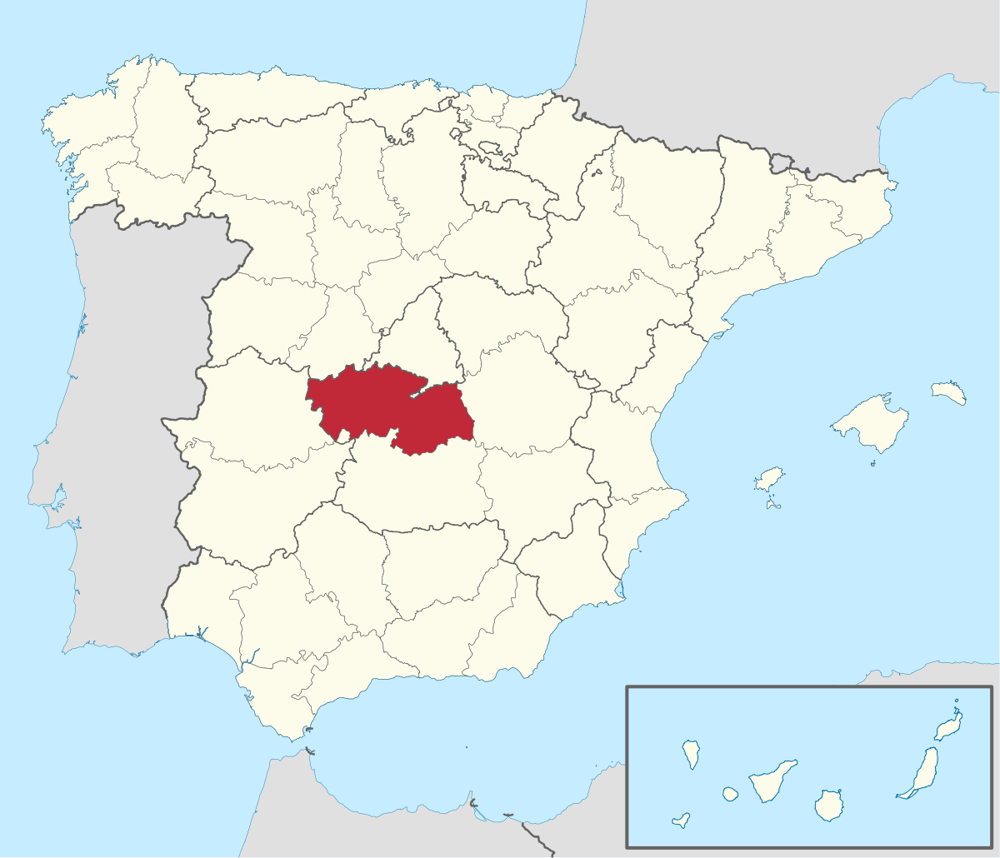

Bienvenidos a Nuestro Restaurante
Disfruta de una experiencia única con nuestro menú gourmet y servicio de alta calidad.
Disfruta de una experiencia única con nuestro menú gourmet y servicio de alta calidad.
Mantente actualizado con nuestras novedades y promociones.
Ver RSS | Ver AtomMi servidor central estará en el centro de Toledo. Puedes ver su ubicación en el siguiente mapa:
